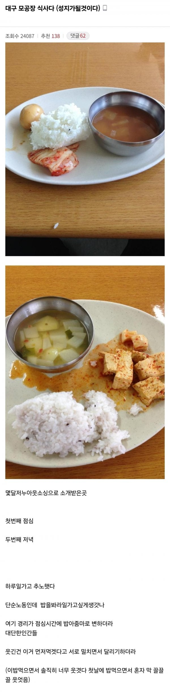

퇴사율 200% 공장 식단
댓글
저런 좆소썰보면 진짜신기하긴함 ㅋㅋㅋㅋㅋㅋ
상상한것 그이상을 보여줌 ㅋㅋ
식자재에서 제육사다가 해줘도 돈얼마안드는데 너무하네
참도깨비 제육 맛있더라 간장좀 넣으면 단맛 잡힘
고담..
조선시대 노비도 저것보단 잘 먹였겠다 ..ㅋㅋㅋ
조선시대면 양민기준 흰 쌀밥에 닭알 나온거면 상위 1%지
보리밥도 못먹어서 산나물 캐다가 풀죽 쒀 먹고 그랬는데.. 괜히 '보릿고개'란 말이 있겠어?
유치장이 더 푸짐하다
ㅎㄷㄷ 한 식단이네
양까지 부족해서 늦으면 굶나 보네
시발 이란 말 밖에 안나온다
에이 주작이겠지 설마ㅋㅋㅋㅋㅋ
하 좀 밥 먹는 거랑 화장실 이 두개만 좀 제대로 해라
요새도 진짜 저런 곳 있냐? ㅋㅋㅋㅋ
이걸 점심때 런을 안하네
ㅆ;발 계란후라이라도 하나 해주지
임진왜란 당시 조선군보단 낫네 ㅋㅋㅋㅋㅋ
김자반 주먹밥 먹을래, 저거 먹을래 물으면 난 주먹밥 먹을듯
나도 2024년 대구에서 일하다 때려쳤는데 현장직 8천원 + 상여금 300퍼인가 해서 법적으로 문제 없는 월급 주야 2교대 52시간 넘게 일하고 52시간 기본해도 300도 안넘음 개 씹 병신 중견이었음
반찬 공장인데 밥안주는 공장도 있는거보고 저긴 밥주는걸 다행인거같다
2014즈음 고딩때 나이 속이고 간 군포 야간 물류센터 밥이랑 비슷하네
??: 요즘 청년들은 힘든 일은 안하려고 해
ㅅㅂ 일이 빡세도 밥이 맛있으면 만족도 올라가는데 ㄹㅇ 편의점 도시락이 훨씬 나은데?
내가 먼저 먹을꺼임 꺼지셈 직관하면 웃음 나올만하지
엠창좆소썰은 언제나 재밌어
왜냐면 계속 우려먹어야 하니까.
검색해보니까 2016년 임.ㅋㅋ